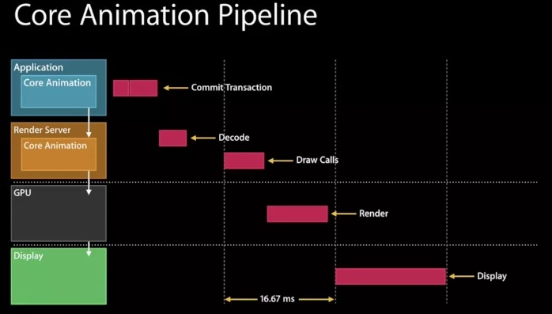

学习自即刻团队的离屏渲染
iOS渲染架构
在WWDC的Advanced Graphics and Animations for iOS Apps（WWDC14 419，关于UIKit和Core Animation基础的session在早年的WWDC中比较多）中有这样一张图：

可以看到是CPU和GPU协作完成了渲染操作。CPU主要在Application这一层操作，之后在RenderServer线程，CoreAnimation会将具体操作转换成发送GPU的draw calls（以前是call OpenGL 现在有部分转为Metal）,进行渲染
离屏渲染
当需要在屏幕上显示内容时，至少需要一块与屏幕像素数据量一样大的frame buffer，作为像素数据存储区域，而这也是GPU存储渲染结果的地方。如果有时因为面临限制，无法把渲染结果直接写入frame buffer，而是先暂存在另外的内存区域，之后在写入frame buffer，这个过程就被称为离屏渲染
CPU"离屏渲染"？
在UIView中自己执行的drawRect方法，cpu会申请一块内存区域等待有可能到来的绘画操作。
在CPU中进行的光栅化操作（如文字渲染、图片解码）等
都无法直接绘制到GPU掌管的frame buffer，只能暂存在另外一块内存中
这些发生在CPU中这些“离屏渲染”并不是真正意义上的，而是属于"软件渲染"范畴的
GPU离屏渲染
我们知道，渲染主要由CoreAnimation的Render Server模块，通过调用显卡驱动提供的OpenGL/Metal接口执行。在执行渲染时，Render Server遵循画家算法，layer按照次序输出至frameBuffer，覆盖即刻得到最终的显示结果，然后交由GPU进行渲染显示到屏幕上
但是有部分场景是无法这样实现的，因为GPU虽然可以按照画家算法进行输出，但是无法再某曾渲染完成后，再回头擦除或者改变其中的某部分。这就意味着，对于layer如果不能单词遍历就完成渲染，那就只能另开一块内存，借助这个临时中转区域来完成多次的修改/剪裁操作(这就是离屏渲染了)。
常见离屏渲染场景
- corenerRadus+clipsToBounds
因为此时子layer也会被裁减，但是在没有统一组合后也是无法获得统一裁剪后的图像，因此需要开辟另外一块内存，在渲染和切角完成后，输出到frame buffer中
注意如果没有clipsToBounds，也不会触发离屏渲染了 - shadow
原因其实与圆角差不多，在没有将画布上所有内容组合完成之前也是无法知道阴影形状的，因此需要额外的内存空间。
当然，如果我们能在整个画布都没有渲染完成之前就知道阴影部分的形状（设置阴影的shadowPath），也可以绘制阴影而不触发离屏渲染 group opacity
此时的alpha并不是加到某一层，而是整个layer树，因此只能等渲染完成再加上alpha，最后和底下的其它layer相折叠，得到实际的颜色。因此这也是需要另外开辟存储空间的mask
mask由layer和其上的子layer组合，而且可能有透明度，因此是会触发离屏渲染的
UIBlurEffect

离屏渲染解决方案
因为离屏渲染开销很大，特别是在滚动视图中，每帧都会触发cell的重绘，因此在无法避免时，就尽量降低性能影响，通过CALayer提供的shouldRasterize设置其为true后，Render Server会强制吧layer的渲染结果(包括其子layer，以及圆角、阴影、group opacity等等)保存在一块内存中，这样接下来就可以被复用，而不会再次离屏渲染了
注意:
shouldRasterize主旨在于降低性能损失，但是至少会触发一次离屏渲染，如果layer本不复杂，也没有圆角 阴影等，打开这个只会没必要的多一次离屏渲染- 一旦缓存超过100ms没有被使用，会被自动废弃
- layer的内容必须是静态的，因为一旦发生变化缓存就失效了，就有需要重新离屏渲染，然后缓存，这就需要我们极力避免的情况
CPU渲染的使用
因为GPU对图形处理的更高性能，以及其更好的并行计算能里，我们倾向于让GPU完成渲染任务，而CPU有更多时间来处理复杂的app的复杂逻辑。
但是针对一些特殊情况，比如文字渲染(CoreText),图片渲染(ImageIO),因为此时GPU并不擅长此类工作，因为需要先由CPU处理好之后，将结果作为texture传给GPU.
比如，我们可以使用CoreGraphic来给图形设置圆角(将圆角以外的部分设置为透明)，这样的话就全部由CPU完成，不再需要使用corerRadius。而且这样的话，我们也可以做到灵活控制裁剪和缓存的时机，避开CPU和GPU繁忙，平衡性能波动
注意：
- 渲染不是CPU强项，调用CoreGraphics会消耗其相当一部分时间，因此通常将CPU渲染放在后台完成(AsyncDisplayKit的实现思想)。然后再回到主线程，将渲染结果传给CoreAnimation
- CPU渲染性能不够 只能渲染静态的元素，如文字、图片等
- 渲染结果的bitmap数据量较大，占用较大内存，应该在使用完成后，及时释放，否则容易OOM
- 使用CPU渲染就不要再触发离屏渲染了
- 多使用Instuments工具测试性能
即刻团队对即刻APP的优化
- 即刻大量应用AsyncDisplayKit(Texture)作为主要渲染框架，对于文字和图片的异步渲染操作交由框架来处理。
- 对于图片的圆角，统一采用“precomposite”的策略，也就是不经由容器来做剪切，而是预先使用CoreGraphics为图片裁剪圆角
- 对于视频的圆角，由于实时剪切非常消耗性能，我们会创建四个白色弧形的layer盖住四个角，从视觉上制造圆角的效果
- 对于view的圆形边框，如果没有backgroundColor，可以放心使用cornerRadius来做
- 对于所有的阴影，使用shadowPath来规避离屏渲染
- 对于特殊形状的view，使用layer mask并打开shouldRasterize来对渲染结果进行缓存
- 对于模糊效果，不采用系统提供的UIVisualEffect，而是另外实现模糊效果（CIGaussianBlur），并手动管理渲染结果